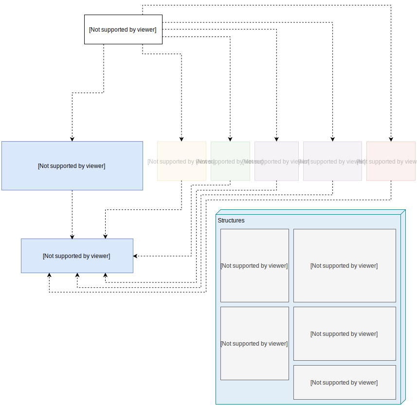

<!DOCTYPE html>
<html>

<head>
	<style>
		#svg-diag {
			display: flex;
			align-content: center;
			justify-content: center;
		}

		#svg-diag img {
			width: 100%;
		}

		body {
			font-family:Arial, Helvetica, sans-serif;
		}
	</style>
</head>

</html>

<body>
	<div id="svg-diag">
		
	</div>

	<div id="body">
		<h1>Project architecture</h1>
		<ul>
			<li>Quiz code is de-coupled from flask and from persistence solution.</li>
			<li>Persistence module will decouple storage solution.</li>
			<li>Team flask code will decouple flask dependencies.</li>
		</ul>

		<h2>Module Coding Responsibilities</h2>
		<p>The following minimum functionality are subject to expansion and revision in the final assignment instructions.</p>

		<h3>Programmer 1: Login, authenticate, persistence</h3>
		<ul>
			<li>Password authentication.</li>
			<li>Two classes of privilege: student and instructor.</li>
			<li>New account configuration.</li>
			<li>Storage and retrieval for other modules.</li>
		</ul>

		<h3>Programmer 2: Create Quiz</h3>
		<ul>
			<li>Instructor only.</li>
			<li>Manage question bank.
				<ul>
					<li>MCQ's questions, choices and answers.</li>
					<li>Modify, copy existing questions.</li>
					<li>MCQ can have multiple correct answers.</li>
				</ul>
			</li>
			<li>Manage quiz content.
				<ul>
					<li>Instructor access limited to owner of quiz.</li>
					<li>Add/remove quiz questions and question value.</li>
					<li>Number of attempts allowed.</li>
					<li>Start and end time.</li>
					<li>Students taking the quiz.</li>
					<li>Modify and copy quiz.</li>
				</ul>
			</li>
		</ul>
		<h3>Programmer 3: Take Quiz</h3>
		<ul>
			<li>Check access.
				<ul>
					<li>Student and time.</li>
					<li>Limit number of attempts.</li>
				</ul>
			</li>
			<li>Navigate questions.</li>
			<li>Record/modify answers until submission.</li>
			<li>Suspend attempt for later completion/submission.</li>
			<li>Record all complete or incomplete attempts.</li>
		</ul>

		<h3>Programmer 4: View Results, Automatic Grading</h3>
		<ul>
			<li>Instructor views.
				<ul>
					<li>Class results: for an individual quiz: class participation, average, histogram.</li>
					<li>Class attempts: for an individual quiz: number of attempts by students.</li>
					<li>Individual results: for individual student, each quiz, for each attempt, for each question.</li>
				</ul>
			</li>
			<li>Student views.
				<ul>
					<li>Summary by quiz all my attempts.</li>
					<li>Summary by quiz.</li>
					<li>Each question show my submission, results and correct answers.</li>
				</ul>
			</li>
		</ul>

		<h3>Programmer 5: Manual Grading</h3>
		<ul>
			<li>Access by quiz owner/instructor.</li>
			<li>View individual results.
				<ul>
					<li>Modify grade for student attempt.</li>
					<li>Modify student answer and re-grade.</li>
				</ul>
			</li>
			<li>View quiz.
				<ul>
					<li>Adjust grading for all students.</li>
					<li>Individual question: change correct answer/answers and re-grade all students.</li>
				</ul>
			</li>
			<li>Attach optional note with timestamp to modification(s).
				<ul>
					<li>Previous modification notes are viewable.</li>
				</ul>
			</li>
		</ul>

		<h2>Assignment Deliverables</h2>
		<p>The following deliverables are subject to expansion and revision in the final assignment instructions.</p>
		<h3>Assignment 5</h3>
		<ul>
			<li>Use cases for your module functionality.</li>
			<li>Requirements for your module functionality.</li>
			<li>Interface, docstrings and function stubs for your module.
				<ul>
					<li>All team members' sign-off on your interface design being complete and acceptable.</li>
				</ul>
			</li>
			<li>Unittests for your module.</li>
			<li>Working flask test front-end for your module.</li>
		</ul>

		<h3>Assignment 6</h3>
		<ul>
			<li>Assignment 5 deliverables plus working implementation for your module.
				<ul>
					<li>Requirements for your module functionality.</li>
					<li>Interface, docstrings your module.</li>
					<li>(Revised) Correct and passing unittests for your module.</li>
					<li>Flask test front-end for your working module implementation.</li>
				</ul>
			</li>
		</ul>

		<h3>Team Project</h3>
		<ul>
			<li>Integration of working modules.
				<ul>
					<li>Final flask front end with consistent styling and user interface.</li>
					<li>Full project implementation.</li>
					<li>Requirements and use cases in consistent format.</li>
					<li>Project documentation.</li>
				</ul>
			</li>
		</ul>
	</div>
</body>

</html>
